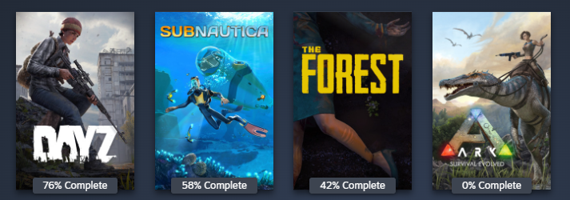

This entry covers the first two weeks of this class. During this time, we received an overview of the
course and the activities we would engage in. We were then instructed to brainstorm ideas for the game
we would create for our class project.
My game design document: google
doc
When deciding on what my game would be about, I had many ideas that I had been thinking about. Still, I
decided on the game idea of a top-down 1v1 boat combat game that will have a game aspect of the loser of
each round will be able to choose a card that will give them a buff to create a more interesting aspect
to the game and provides a handy cap to the worse players. For this game, I want it to be multiplayer,
but to avoid the instinct trouble that a multiplayer game gives, I will make it possible to play two
players on one keyboard.
I have decided to create my game using Unity as it's much better with 2d games than Unreal, and I have
some recent experience with it. I briefly considered using pygame, but I had already developed a game
prototype using pygame. I would rather use a game engine to avoid coding the basics of the game, such as
physics and camera class. This way, I can focus on the actual making of a game that is fun and engaging,
which I have not previously really learnt about. Using a game engine will help me learn more in this
class.

While developing my game, I created a new Unity project: Pew Pew Boats. My first goal was to implement
player input and movement. To achieve this, I made two capsule sprites: Player One and Player Two. I
coded the movement mechanics, assigning the 'A' and 'D' keys for turning left and right for Player One
and the left and right arrow keys for Player Two, while Player Two uses the up and down arrow keys. I
decided to have both players controlled from the same computer because I have always enjoyed games with
that multiplayer dynamic, like Lava Boy and Water Girl.
After I completed the basic player movement, I focused on implementing the ability to shoot a cannon
from the boats. To achieve this, I created a new circle sprite named "projectile." I then coded it to
clone itself and shoot from the player that initiated the action.
I wanted to create some basic boat assets, which I was planning to be quick and easy, but I found that I
was not too much of an artist, and there were no free assets that were what I wanted, so the act of
making the boat assets took a lot longer than I wanted to. I approached making the assets by creating
the shape of the boats with Microsoft Paint, as they provide an easy way to put shapes together. After I
created that, I moved into gimp, which allows me to be more precise with my creation; I found that I
made my first try of the asset was way too low resolution, so I had to restart and make it all again. I
thought this would be quicker the second time, but I spent too much time trying to make it look perfect.